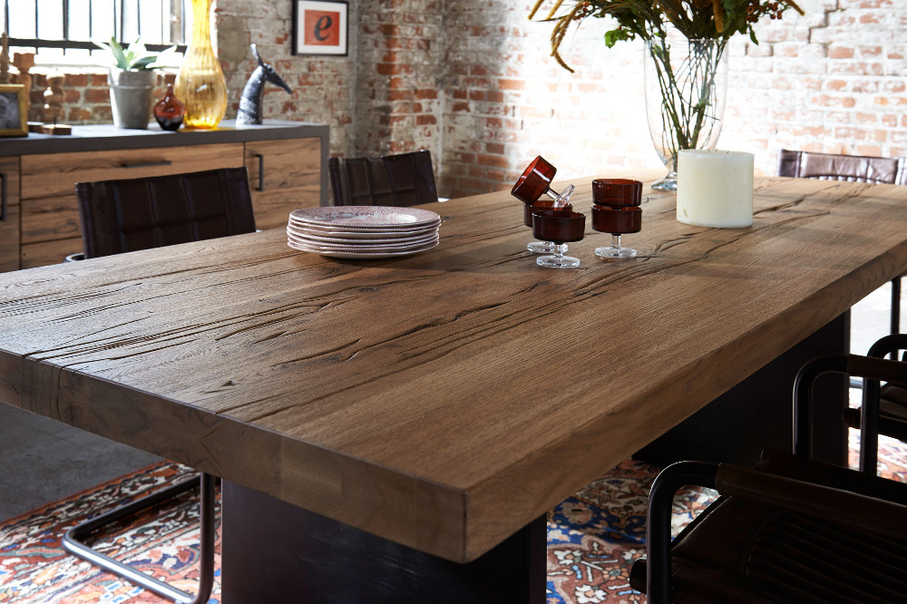
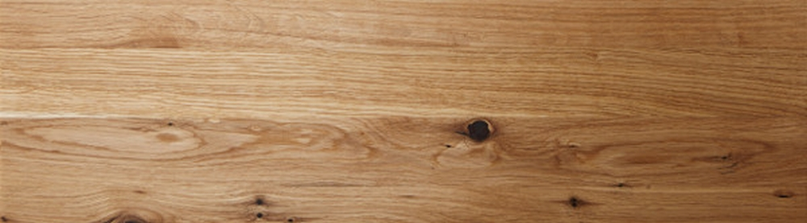
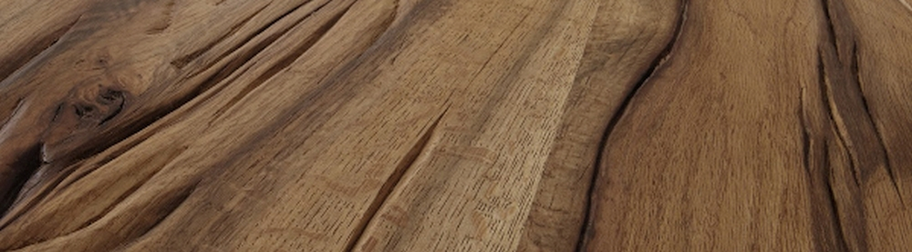

Beam oak vs. wild oak
Here you'll learn about the differences between beam oak and wild oak.

Beam oak or wild oak isn't understood to mean a type of tree in the traditional sense, nor is it a special type of wood. Rather, the term relates to a special sorting of the trees, which have to meet certain criteria during the selection and also during production. You can find out what these are here.
Wild oak
Wild oaks are oaks that have an exceptionally lively and expressive grain. Trees in shady locations, preferably on the edge of the forest, have such characteristics. In addition, only trees with an above-average number of knotholes are used. In technical jargon, the wild oak is therefore also called knotty oak.

Producers choose particularly extremely grained wooden parts to manufacture wild oak furniture. Visible knots as well as darker and lighter wood sections complete the picture. The use of expressive wood creates furniture that with its natural charisma attracts everyone's attention.
Beam oak
Strictly speaking, the beam oak differs little from the actual oak, at least in terms of quality. But there's one special feature that makes the difference. The beam oak has an above-average number of growth cracks and knotholes and, as the name suggests, beams compose it. While the wild oak is fine, noble, and expressively grained, the beam oak looks much more rustic.
However, there's no sorting of the wood because of such quality defects, as is normally the case with other furniture, but each individual wood is used for production.
